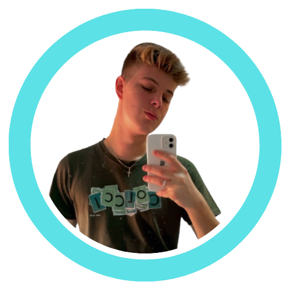

OBJETIVO.
Busco oportunidade de trabalho através de estágio ou júnior na área de TI. Atualmente estou cursando Ciências da Computação na ATITUS em PassoFundo no 2º semestre. Gosto de estar sempre aprendendo algo novo na áreade tecnologia, tenho facilidade em trabalhar em equipe e sempre estoubuscando melhorar como pessoa e no trabalho.
